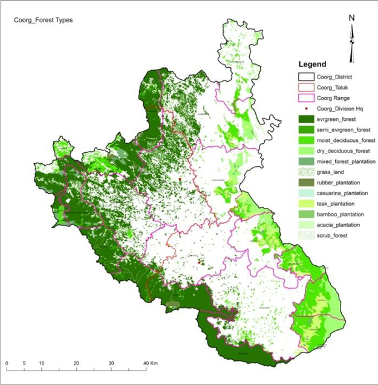
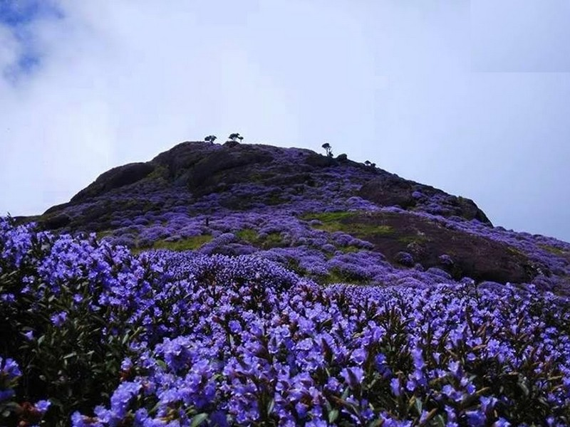
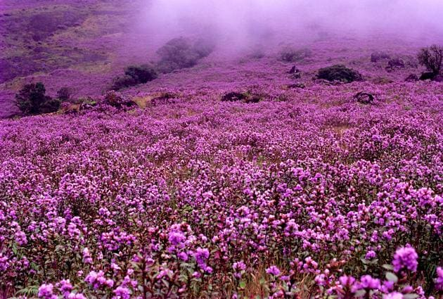
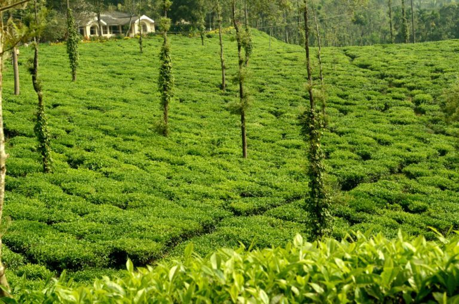
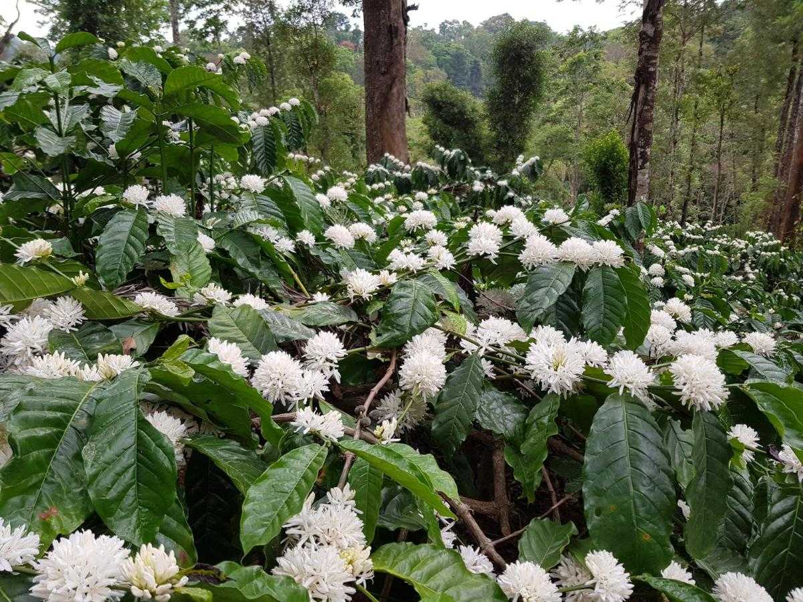
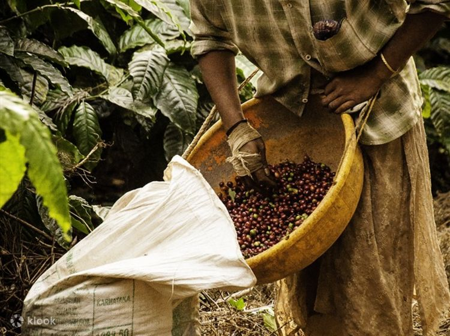
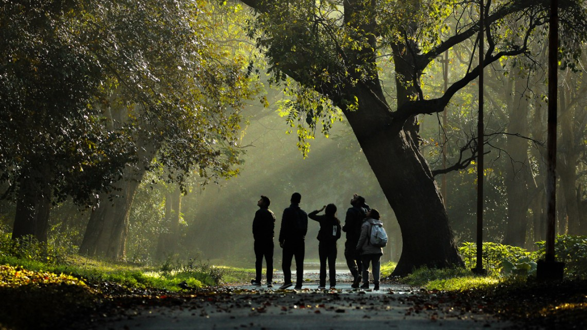
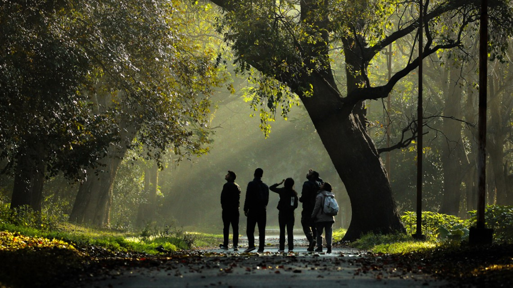
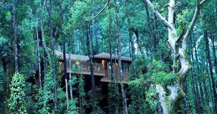
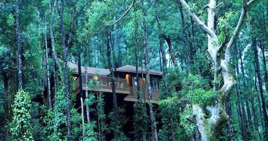

Coorg sometimes referred to as the ‘Kashmir of the South’ is one of
the stunning hill stations in Karnataka. Nestled amongst the lush
and opulent hills of Western Ghats, Coorg is blessed with the unrivalled
scenic beauty, which is quite spectacular. Acres of some lush green coffee
as well as tea plantations, scenic mountains, River Kaveri and cascading waterfalls,
the place gushes forth from the place of origination make a perfect backdrop for a beautiful
holiday. Coorg is a beautiful window, which showcases the nature in its entire splendour. You
can explore various scenic spots in Coorg hill station, which ensures that you go back your
home with a bouquet of lovely memories.
Coorg, also known as Kodagu is actually well known for its beautiful scenery
and exceptional weather. This place has lured visitors from across the world. This place has
been enriched with the vibrant scenery and stunning landscapes. Coorg tourism thrives in the
summer season, which lasts between March and May. Apart from that, you can also explore the
Coorg hill station during monsoon too.
forest area of coorg

the forest density for different vegetation type prevailed in the district. Accordingly
evergreen forest type is the predominant vegetation type in the district accounting for 49.45% followed by moist deciduous
forest (19.17%), dry deciduous forest (10.85%) and semi-evergreen forest type constitute only 1.94% of the total forest cover.
Remaining 18.58% of area composed of different plantations. of the 49.45% of evergreen forest type cover in Kodagu district, 52.41 and 30%
of the area are having a forest density of 40-70% and > 70% respectively. It is the moist deciduous forest type with 40-70% density and dry deciduous
forest type with 25-40 and 40-70% density next to evergreen forest which cover major part of the district.
Accordingly the Pushpagiri, Talakavery Bramhagiri Bagamandala, Sampje, Mundrote, Makut, Sirimangala range having very highly dense evergreen
forest concerntration from > 70%, 40% to 70%. In Somavarpet, Madkeri, Bagamandala and virajpet and ponnampet range having 25% to 40%, 10% to 25% and < 10%
concentrated.
Neelakurinji Flowers blossom in Kodagu

Neelakurinji (Strobilanthes kunthiana) is a rare and beautiful flower that blooms in the Western Ghats mountain range of India.
It is particularly famous for its mass flowering tha occurs once every 12 years. Kodagu also known as Coorg is a district located in the state of
Karnataka in south India, and it is one of the regions where Neelakurinji blooms.
When Neelakurinji flowers bloom, they cover the hillsides with a vibrant purplish-blue carpet, creating a mesmerizing sight. The last mass blooming
of Neelakurinji occurred in 2018, and it attracted a significant number of tourists to the region. The next mass flowering is expected to take place in 2030.

Neelakurinji is a long-lived shrub that usually remains dormant for years. however, when the conditions are right, it undergoes a breathtaking
transformation, covering the hillsides with a vibrant shade of purple-blue flowers. This blooming event is known as the "Neelakurinji Blossom" or "Neelakurinji Bloom"
Tea Estate

Coorg is a picturesque district in the state of Karnataka, India. It is well-known for its stunning landscapes, lush greenery, and coffee and tea plantations.
Coorg is an ideal location for tea Lovers and offers several tea estates where visitors can experience the beauty of tea cultivation and
indulge in the flavors of fresh tea.
One popular tea estate in Coorg is the Tamara Tea Estate. Located in the quiet hills of the Western Ghats, the Tamara Tea Estate offers a
serene and immersive tea plantation experience. Visitors can explore the estate, learn about the tea-making process, and witness the tea
leaves being harvested and processed. The estate also provides opportunities for tea tasting sessions where guests can savor different varieties of tea.
Another notable tea estate in Coorg is the Glenlorna Tea Estate. Situated amidst the scenic beauty of Coorg, this estate is known for produsing
high-quality organic tea. Visitors can take guided tours of the plantation, interact with the tea pluckers, and gain insights into the cultivation and processing
techniques. The estate also has a tea factory where guests can observe the tea leaves being transformed into the final product.
Coffee Plantations

Coffee Plantations Coorg is renowned for its sprawling coffee estates that cover large areas of its landscape.
These plantations are a sight to behold, with lush greenery, tall coffee trees, and the aroma of fresh coffee beans
in the air. Coffee is one of the main crops grown in Coorg, and the plantations provide a unique and picturesque setting for visitors.
Scenic Landscapes Coorg is blessed with stunning natural landscapes. As you explore the coffee plantations,
you'll be treated to breathtaking vistas of rolling hills, mist-covered mountains, and cascading waterfalls.
The region's topography, coupled with the verdant coffee estates, creates a mesmerizing backdrop that captivates tourists.
Plantation Walks and Tours Many coffee estates in Coorg offer guided plantation walks and tours, allowing visitors to learn
about the coffee cultivation process firsthand. You can witness the various stages of coffee production, from planting and harvesting
to processing and roasting. Knowledgeable guides explain the intricacies of coffee farming, sharing insights into the region's coffee culture.

Coffee Tasting A visit to Coorg's coffee plantations is incomplete without indulging in some freshly brewed coffee.
Many estates have dedicated tasting rooms where visitors can savor different varieties of coffee, brewed from beans grown
on-site. It's a delightful experience to sample aromatic blends and understand the nuances of Coorg's coffee flavors.
Homestays and Resorts To immerse yourself in the coffee plantation experience, you can opt for homestays or
resorts located within the estates. These accommodations offer a tranquil and authentic Coorg experience, surrounded by the lush greenery
of coffee plantations. Waking up to the sight of misty hills and enjoying a cup of freshly brewed coffee in such serene surroundings is truly rejuvenating.
Wildlife and Bird Watching Coorg's coffee plantations are home to a diverse range of flora and fauna. As you explore the estates,
you might spot various species of birds, butterflies, and even small mammals. Birdwatching enthusiasts can enjoy observing native and
migratory birds amidst the natural habitats created by the coffee plantations.
 

 
